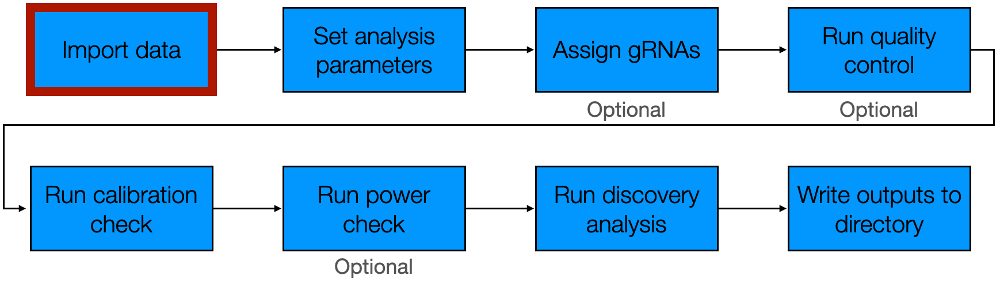
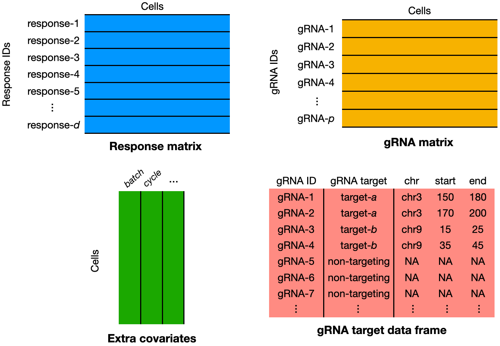
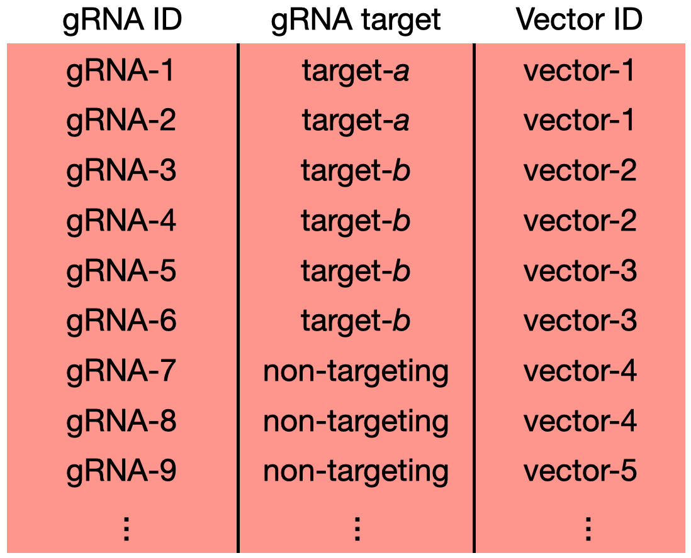

1 Import data
Tip
Part I of this book describes how to apply sceptre to analyze single-cell CRISPR screen data on a laptop or desktop. Part I assumes knowledge of R at a beginner level.
This chapter describes how to import single-cell CRISPR screen data into sceptre, which is the first step of the sceptre pipeline.
Users either can import data directly from the output of an existing software package (e.g., 10X Cell Ranger or the Parse Biosciences count matrix generation program) or from a specified set of R objects. We recommend that users import data from the output of an existing software package, as doing so decreases the probability of error. We begin by loading the sceptre and sceptredata packages.
1.1 Import data from an existing software package
sceptre links up with two programs for upstream processing of single-cell CRISPR screen data: 10X Cell Ranger and the analogous software tool developed by Parse Biosciences. (We refer to the latter program as the “Parse program.”) We describe how to import data from each of these tools below.
1.1.1 Import from 10X Cell Ranger
Section 1 of The whole game describes how to import data from 10X Cell Ranger. We include a minimal working example here.
directories <- paste0(
system.file("extdata", package = "sceptredata"),
"/highmoi_example/gem_group_", 1:2)
data(grna_target_data_frame_highmoi)
sceptre_object <- import_data_from_cellranger(
directories = directories,
moi = "high",
grna_target_data_frame = grna_target_data_frame_highmoi
)1.1.2 Import from the Parse program (experimental)
Users also can import data from the output of the Parse CRISPR Detect platform via the function import_data_from_parse(). import_data_from_parse() takes the arguments gene_mat_fp, grna_mat_fp, all_genes_fp, all_grnas_fp, moi, grna_target_data_frame, and extra_covariates. (Only the latter argument is optional; all others are required.) gene_mat_fp (resp., grna_mat_fp) is a file path to the .mtx file storing the gene (resp., gRNA) expression data. Next, all_genes_fp is a file path to the all_genes.csv file. all_genes.csv is assumed to have columns “gene_id,” “gene_name,” and “genome;” the first two columns are assumed to give the ID and human readable name, respectively, of each gene, and the last column (indicating the genome to which each gene belongs) is ignored. Next, all_grnas_fp is a file path to the all_grnas.csv file. all_grnas.csv is assumed to contain columns “gene_id,” “gene_name,” and “genome.” The column “gene_name” is assumed to give the ID of each gRNA; the remaining two columns are ignored. Additionally, moi is a string indicating the MOI of the dataset and can take values "low" or "high". Finally, extra_covariates is an optional data frame of extra covariates to pass to sceptre (see below). It is assumed that the data are stored in a single set of files (as opposed to multiple sets of files corresponding to, e.g., different samples). Below, we provide an example of initializing a sceptre_object from a set of Parse outputs.
directory <- paste0(system.file("extdata", package = "sceptredata"),
"/parse_example/")
gene_mat_fp <- paste0(directory, "gene_mat.mtx")
grna_mat_fp <- paste0(directory, "grna_mat.mtx")
all_genes_fp <- paste0(directory, "all_genes.csv")
all_grnas_fp <- paste0(directory, "all_grnas.csv")
grna_target_data_frame <- data.frame(
grna_id = c("guide_A", "guide_B", "guide_C"),
grna_target = c("target-A", "target-B", "non-targeting")
)
sceptre_object <- import_data_from_parse(
gene_mat_fp = gene_mat_fp,
grna_mat_fp = grna_mat_fp,
all_genes_fp = all_genes_fp,
all_grnas_fp = all_grnas_fp,
moi = "low",
grna_target_data_frame = grna_target_data_frame
)We encourage Parse users to examine the example Parse data to ensure that their data match the example data. import_data_from_parse() is an experimental function, and the API of this function is subject to change. We expect the API of import_data_from_parse() to solidify as we learn more about the Parse CRISPR detect platform and the structure of the Parse program output.
1.1.3 Add extra covariates
import_data_from_cellranger() and input_data_from_parse() compute the covariates grna_n_nonzero, grna_n_umis, response_n_nonzero, response_n_umis, response_p_mito, and batch. Users may wish to supply additional covariates (e.g., cell cycle or cell type) to sceptre. To do so, users can pass a data frame extra_covariates containing additional covariates to import_data_from_cellranger() or input_data_from_parse(). Below, we simulate an additional covariate cell_type and pass this covariate as an argument to the data import function.
# simulate an extra covariate, namely cell type
cell_type <- sample(
x = paste0("type_", 1:3),
size = 45919,
replace = TRUE
) |> factor()
extra_covariates <- data.frame(cell_type = cell_type)
# import data, passing the the extra covariates as an argument
sceptre_object <- import_data_from_cellranger(
directories = directories,
moi = "high",
grna_target_data_frame = grna_target_data_frame_highmoi,
extra_covariates = extra_covariates
)The additional covariate of cell_type is printed in the “covariates” field when we evaluate sceptre_object in the console.
sceptre_objectAn object of class sceptre_object.
Attributes of the data:
• 45919 cells
• 526 responses
• High multiplicity-of-infection
• 70 targeting gRNAs (distributed across 35 targets)
• 25 non-targeting gRNAs
• 7 covariates (batch, cell_type, grna_n_nonzero, grna_n_umis, response_n_nonzero, response_n_umis, response_p_mito)1.2 Import data from a collection of R objects
Users also can import data into sceptre from a specified set of R objects. This data import strategy is most appropriate for users employing less standard data preprocessing pipelines for generating the response and gRNA count matrices. We use the high-MOI CRISPRi data as a working example. We can obtain these data in R matrix and data frame format as follows.
data(highmoi_example_data)
# response matrix
response_matrix <- highmoi_example_data$response_matrix
# grna matrix
grna_matrix <- highmoi_example_data$grna_matrix
# batch information
extra_covariates <- highmoi_example_data$extra_covariates
# response names
response_names <- highmoi_example_data$gene_names
# gRNA target data frame
grna_target_data_frame <- grna_target_data_frame_highmoiWe call the function import_data() to import the data from a collection of R objects. import_data() takes several arguments: response_matrix, grna_matrix, grna_target_data_frame, moi, extra_covariates, and response_names. The following figure summarizes the main inputs to this function.

We describe the inputs below.
-
response_matrixis the matrix of response UMI counts. The responses should be in the rows and the cells in the columns. The row names of theresponse_matrixshould be the response IDs. The first ten rows and columns of the exampleresponse_matrixare as follows.response_matrix[1:10,1:10]10 x 10 sparse Matrix of class "dgTMatrix" ENSG00000069275 4 6 10 9 4 13 8 8 10 8 ENSG00000117222 2 1 . 1 1 . . . . 1 ENSG00000117266 . . . . . . . . . . ENSG00000117280 . . . 1 . . . . . 1 ENSG00000133059 . . . . . 1 . 2 . 1 ENSG00000133065 . . . . . . . 2 . 1 ENSG00000133069 . . . . . . . . . . ENSG00000158711 . . . . . . . 1 . . ENSG00000158715 . . . . . . . . . . ENSG00000162873 . . . . . . . . . . -
grna_matrixis the matrix of gRNA UMI counts. The gRNAs should be in the rows and the cells in the columns. The row names ofgrna_matrixshould be the gRNA IDs. The first ten rows and columns of the examplegrna_matrixare as follows.grna_matrix[1:10,1:10]10 x 10 sparse Matrix of class "dgTMatrix" grna_CCGGGCG . 8 . . . . . . . . grna_TGGCGGC . . . . . . . . . . grna_AAGGCCG . . . . . . . . . . grna_GACGCCG . . . . . . . . . . grna_CACACCC . . . . . 25 . . . . grna_GCTCACA . . . . . . . . . . grna_CTCTGAG . . . . . . . . . . grna_GCGCCCG . . . . . . . . . . grna_GAGCGTG . . . . . . . . . . grna_GCTCTGC . . . . . . . . . .response_matrixandgrna_matrixshould be stored in one of the following formats:matrix,dgTMatrix,dgCMatrix, ordgRMatrix. Note that the columns ofresponse_matrixandgrna_matrixare assumed to correspond to the same ordering of cells. Users should make sure to preserve the consistency of column ordering. We recommend that users add cell barcodes as column names forresponse_matrixandgrna_matrix, in which casesceptrechecks the consistency of cell ordering. -
grna_target_data_frameis the data frame mapping each gRNA to its target. Thegrna_target_data_framethat we pass toimport_data()is exactly the same as the one that we pass toimport_data_from_cellranger. See Section 1 of The whole game for more information about this argument.grna_target_data_frame[c(1:4, 21:24, 80:83),]grna_id grna_target chr start end 1 grna_CCGGGCG ENSG00000069482 chr11 68451943 68451958 2 grna_TGGCGGC ENSG00000069482 chr11 68451958 68451974 3 grna_AAGGCCG ENSG00000100316 chr22 39715775 39715790 4 grna_GACGCCG ENSG00000100316 chr22 39715790 39715806 21 grna_TCTTGAC candidate_enh_1 chr1 205720419 205720623 22 grna_TGATCGC candidate_enh_1 chr1 205720623 205720828 23 grna_ATAGGAG candidate_enh_10 chr19 19475680 19475878 24 grna_GCAGGCA candidate_enh_10 chr19 19475878 19476077 80 grna_TATTCGT non-targeting <NA> NA NA 81 grna_GACCTCC non-targeting <NA> NA NA 82 grna_TTTCTCT non-targeting <NA> NA NA 83 grna_AATGAGG non-targeting <NA> NA NA -
moiis a string specifying the MOI of the dataset, either “high” or “low”. This argument serves the same function as it does inimport_data_from_cellranger. See Section 1 of The whole game for more information.moi <- "high" -
extra_covariates(optional) is a data frame specifying cell-specific covariates beyond those thatsceptrecan compute.import_data()computes the covariatesgrna_n_nonzero,grna_n_umis,response_n_nonzero,response_n_umis, andresponse_p_mito.import_data()does not computebatch, asimport_data()does not have access to batch information. Thus,batch— alongside any other relevant covariates, such as cell type — should be included in theextra_covariatesdata frame. Note that the rows ofextra_covariatesare assumed to be in the same order as the columns ofresponse_matrixandgrna_matrix. We recommend users add cell barcodes as row names ofextra_covariates, in which casesceptrewill check the consistency of cell ordering.extra_covariates[c(1:3, 30001:30003),,drop = FALSE]batch 1 b1 2 b1 3 b1 30001 b2 30002 b2 30003 b2 -
response_names(optional) is a vector of human-readable response names.response_namesis used to determine which of the responses (if any) are mitochondrial genes for the purpose of computing theresponse_p_mitocovariate.head(response_names)[1] "NUCKS1" "RBBP5" "CDK18" "RAB29" "DSTYK" "SLC41A1"
We pass the arguments response_matrix, grna_matrix, grna_target_data_frame, moi, extra_covariates, and response_names to import_data(), which initializes a sceptre_object.
sceptre_object <- import_data(
response_matrix = response_matrix,
grna_matrix = grna_matrix,
grna_target_data_frame = grna_target_data_frame,
moi = moi,
extra_covariates = extra_covariates,
response_names = response_names
)1.3 Multi-guide vector data
gRNAs are delivered to cells via a viral vector. In low-MOI screens the experimenter aims to deliver one viral vector to each cell; in high-MOI screens, by contrast, the experimenter aims to deliver multiple viral vectors (each harboring a different gRNA) to each cell. Some recent single-cell CRISPR screens involve a special design in which each viral vector harbors multiple gRNAs. For example, Replogle et al. (2022) conducted a screen in which each viral vector contained two gRNAs, each targeting the same site. In such “multi-guide vector” screens, the user should account for the vector that harbors each gRNA so as to ensure that the cellwise QC and association testing steps are carried out correctly. Users can pass vector information to sceptre by including a vector_id column in the grna_target_data_frame, which specifies the vector on which a given gRNA is located (Figure 1.1).

sceptre employs a simple strategy for handling multi-guide vector data: the UMI counts of gRNAs contained on the same vector are summed, and the resulting quantity is treated as if it were the expression vector of an individual gRNA. The vector IDs should be nested within the gRNA targets. (In other words, each gRNA target can map to multiple vector IDs, but each vector ID should map to a single gRNA target.) Finally, the genomic coordinate columns chr, start, and end optionally can be included the gRNA target data frame, but rows containing the same value for vector_id also should contain the same value for chr, start, and end.
1.4 Accessing the fields of a sceptre_object
A sceptre_object is an S4 object. Like all S4 objects, a sceptre_object contains data, including raw data inputted by the user and processed data that sceptre generates by operating on the raw data. The data stored within a sceptre_object can be accessed via the @ operator (e.g., sceptre_object@foo). We recommend against accessing the data stored within a sceptre_object in this way. Instead, users should interact with a sceptre_object via the functions exported by the package. For example, the “getter” functions get_response_matrix(), get_grna_matrix(), and get_cell_covariates() return the response matrix, gRNA matrix, and cell covariates, respectively, of a sceptre_object.
response_matrix <- get_response_matrix(sceptre_object)
grna_matrix <- get_grna_matrix(sceptre_object)
cell_covariates <- get_cell_covariates(sceptre_object)
1.5 Initializing an ondisc-backed sceptre-object
ondisc is a companion R package to sceptre that — in conjunction with sceptre — enables users to analyze large-scale single-cell CRISPR screen data out-of-core on a laptop or distributed across multiple nodes on a computing cluster. An “ondisc-backed sceptre_object” is a special kind of sceptre_object in which the response and gRNA expression matrices are stored on-disk rather than in memory. We defer a detailed discussion of the ondisc package and large-scale single-cell CRISPR screen data analysis to Part II of this book (i.e., Chapter 7 — Chapter 9). Here, we briefly describe how to create an ondisc-backed sceptre_object. Users can create an ondisc-backed sceptre_object by calling a standard data import function (i.e., import_data() or import_data_from_cellranger()), setting the argument use_ondisc to TRUE and directory_to_write to the directory in which to write the disk-based gene and gRNA expression matrices. The table below summarizes which data import function one should call (and which arguments one should supply to that data import function) on the basis of the input data type and whether one wishes to create a standard sceptre_object or an ondisc-backed sceptre_object. (Note that initializing an ondisc-backed sceptre_object from the output of the Parse program is not yet implemented.)
| Input type | Standard sceptre_object
|
ondisc-backed sceptre_object
|
|---|---|---|
| R matrices | |
|
| 10X Cell Ranger | |
|
| Parse | |
Not implemented |
For example, below, we create an ondisc-backed sceptre_object to represent the high-MOI CRISPRi data, taking as input the output directories from cellranger count and setting directory_to_write to the temporary directory tempdir().
sceptre_object <- import_data_from_cellranger(
directories = directories,
moi = "high",
grna_target_data_frame = grna_target_data_frame_highmoi,
use_ondisc = TRUE,
directory_to_write = tempdir()
)See Section 7.1 and Section 9.3 for more information.